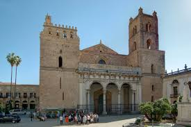

PALERMO
Palermo es la capital de la isla italiana de Sicilia. La Catedral de Palermo, del siglo XII, alberga tumbas reales, mientras que el enorme Teatro Massimo de estilo neoclásico es conocido por los espectáculos de ópera. También en el centro de la ciudad está el Palazzo dei Normanni, un palacio real que se comenzó a construir en el siglo IX, y la capilla Palatina, con mosaicos bizantinos. Los mercados ajetreados incluyen el mercado callejero central de Ballarò y el Vucciria, cerca del puerto.

Dominique: La costa es particularmente fascinante, con sus fantásticos colores que van del azul intenso del mar al verde de la vegetación, a los colores oscuros de las piedras o al blanco de las playas de arena finísima.
El Palazzo dei Normanni también conocido como Palacio Real, es un palacio ubicado en Palermo, Italia, que fue sede de los reyes de Sicilia y del Parlamento siciliano
La catedral de Palermo se sitúa en la ciudad homónima en Sicilia. De fuerte estilo oriental debido principalmente a su patio interior lleno de palmeras. Primeramente fue una basílica bizantina, sobre la que, en 1185, el arzobispo de Palermo mandó levantar un templo de planta basílical con tres ábsides.
La catedral de Monreale es uno de los mayores logros del arte normando en el mundo. Es notable su fusión con el arte árabe que imperaba en Sicilia antes de la conquista de la isla por parte de los normandos.
Los Quattro Canti es una plaza octogonal situada en el cruce entre los dos principales ejes de Palermo: la via Maqueda y il Cassaro. El nombre exacto del lugar es Piazza Vigliena